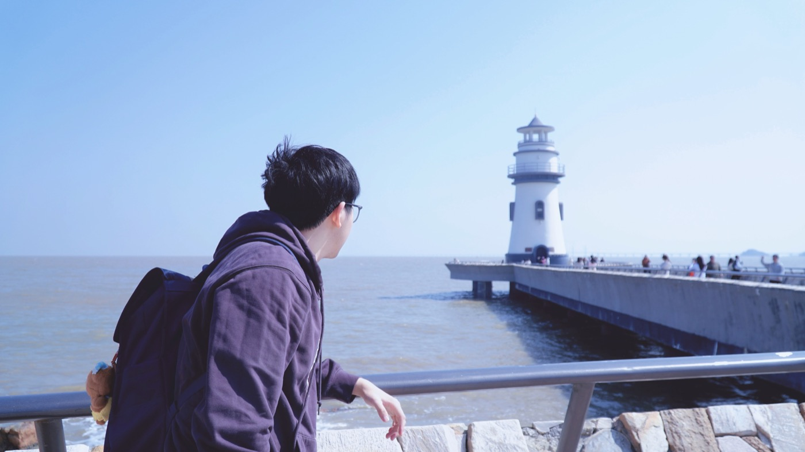
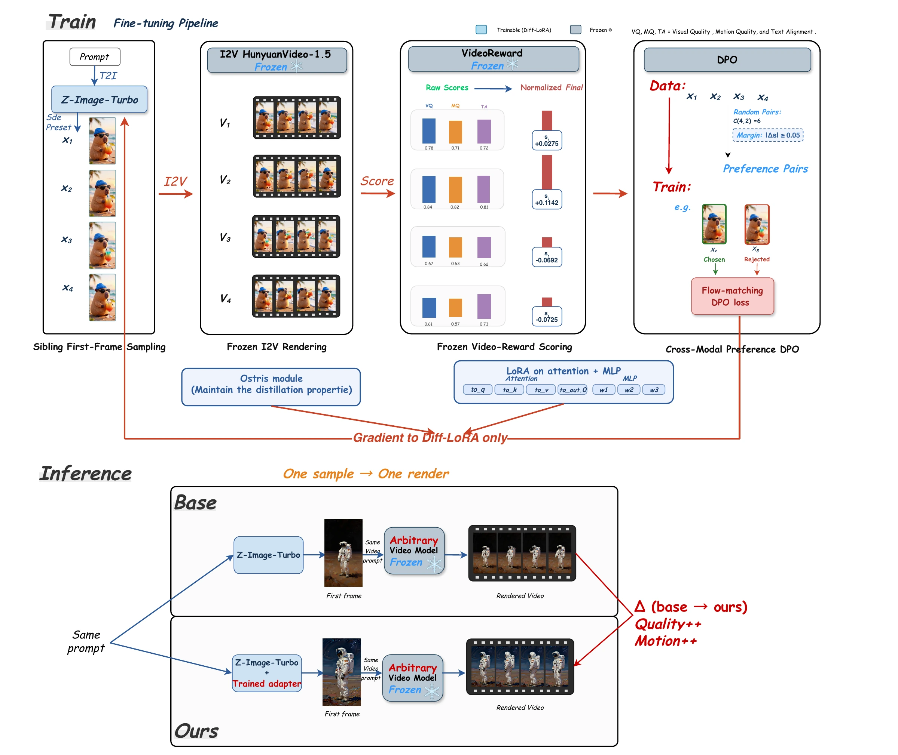

Generative models
Learning better visual representations and generation strategies, with a focus on diffusion models and image-to-video generation.
Hi, I’m Jinyuan Xu (徐瑾源). I work on making visual generative models better, faster, and more useful.
I’m a master’s student in Artificial Intelligence at The Hong Kong University of Science and Technology (Guangzhou), and a member of XLeaF Lab. My research focuses on video generation, diffusion models, and video restoration.
I’m also a research intern in the Imaging Algorithm Research Department at vivo.
Beyond research, I create AI-generated visual stories with 星火AI动漫. Across Kuaishou and Douyin, we have built a combined following of 10,000. Building with generative tools is also how I discover new research questions.

Learning better visual representations and generation strategies, with a focus on diffusion models and image-to-video generation.
Bringing high-quality video restoration closer to practical use through super-resolution, model distillation, and efficient sampling.
Joined vivo as a research intern in the Imaging Algorithm Research Department.
Started my master’s studies in Artificial Intelligence at HKUST (Guangzhou).
Joined XLeaF Lab to explore visual generative models.
Better starting points. More efficient paths. Higher-quality videos.

View full diagram PDF ↗A good image is not always a good starting point for a video. Golden Anchor Learning trains an image generator with feedback from the videos it produces, learning anchors that better support downstream video generation.
Using a frozen image-to-video model and video-level rewards, the framework constructs cross-modal preference pairs and optimizes a text-to-image generator with offline DPO. Only a task LoRA is trained, adding no extra inference steps.
The project evaluates transfer across four image-to-video models, studying how learned anchors improve both visual quality and motion.
Sole first author / Ongoing · Targeting CVPR
Master’s · Artificial Intelligence
Bachelor’s · Statistics
Research Intern · Imaging Algorithm Research
Research Member · Visual Generative Models
Happy to connect about generative models, video research,
or something interesting you’re building.